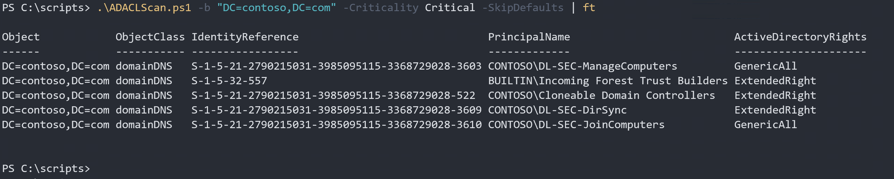
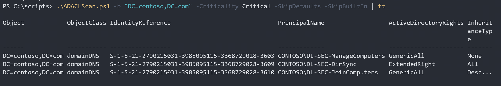
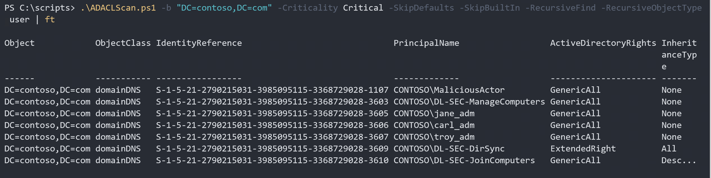

When trying to identify the highly privileged accounts in an Active Directory you might start with the members of the built-in administrative groups like Domain Admin etc. But you cannot stop there since there are many places you can grant accounts permissions and privileges throughout an Active Directory Forest. I will not list all possible locations where permissions can make an account a high value target for an attacker but instead focus on a method to detect highly privileged accounts in access control lists (ACL) on Active Directory objects.
A long time ago I wrote a blog post on examples of these objects in Active Directory where you should pay extra attention: https://docs.microsoft.com/en-us/archive/blogs/pfesweplat/forensics-active-directory-acl-investigation
Let’s start off with an obvious example… the domain root. If a group of users has powerful permissions at the domain root they can practice their given right on all the objects below, except for the ones that are protected by AdminSDHolder. Normally you do not need to delegate permission at this level, even though it’s very common because it’s convenient and easy. Best practice is to delegate permissions at the domain level that only can be delegated here and delegate all other permissions on an OU level, near the scope of management. For example a frequently used permission that can only be delegated at the domain level is “Replicating Directory Changes”, which some applications might require to keep a replicated copy of the directory.
Objectives
You want to keep your highly privileged accounts managed and to do that you need to identify them.
One of the activities in doing that is to list accounts with critical permissions at the domain root.
1. Examine access control list and understand what permissions are critical.
2. Identify accounts and groups that are of importance for our assessment.
3. List explicit added accounts and accounts granted access by membership in nested groups.
FILTERING ACE’s
To do that you can use the AD ACL Scanner. It has both a GUI and a command line mode, cool right? :) First, we will focus on using the command line mode since you easily can pipe the result to any other command you would like to use.
Both the command line and the GUI support creating reports in CSV, HTML and EXCEL. For Excel reports you don’t need to have Microsoft Office installed. Simply just install the PowerShell module ImportExcel by Doug Finke. Thanks Doug!
PowerShell Command
If you run ADACLScan.ps1 without parameters it will launch the graphical interface, but if you add the properly selected parameters you will run in command mode.
To run in command mode, you must add the -base (or the alias for the same -b) parameter and define a starting point using the distinguished name. I will use dc=contoso,dc=com which is the root of my domain.
.\ADACLScan.ps1 -base "dc=contoso,dc=com"
Our objective is to find any unexpected user accounts with critical permissions on the domain level.
To do that we run:
.\ADACLScan.ps1 -b "DC=contoso,DC=com" -Criticality Critical | ft
And as you can see, we only received the critical permissions.
But this result contains a lot of expected users and groups.
Can we exclude the default permissions? - Yes, we can!
Add the parameter -SkipDefaults to filter the result from default permissions.
.\ADACLScan.ps1 -b "DC=contoso,DC=com" -Criticality Critical -SkipDefaults | ft
 Now we have a much shorter list to analyze. In our scenario we have good control of the built-in groups, so we are not interested in listing them here. Both Incoming Forest Trust Builders and Clonable Domain Controllers are groups we monitor and keep track of.
Can we ignore these built-in groups? - Sure!
Add the -SkipBuiltin parameter to the command and it will ignore built-in groups.
.\ADACLScan.ps1 -b "DC=contoso,DC=com" -Criticality Critical -SkipDefaults -SkipBuiltIn | ft
 Ok, Now it’s just some custom ACE’s left. Wow, that’s much easier. Right?
Well, the result contains groups and we need to know what user accounts are critical to the domain root.
We need to know who is member of these groups… and the nested groups… and the groups nested of these… and so on… Sigh!
Let’s fix that! Just add -RecursiveFind.
.\ADACLScan.ps1 -b "DC=contoso,DC=com" -Criticality Critical -SkipDefaults -SkipBuiltIn -RecursiveFind | ft
Awesome, all highly privileged accounts are listed, although we got a couple of additional groups too.
You can filter the recursive search to only return users (by default all objects are returned) in the nested group chain with -RecursiveObjectType user.
.\ADACLScan.ps1 -b "DC=contoso,DC=com" -Criticality Critical -SkipDefaults -SkipBuiltIn -RecursiveFind -RecursiveObjectType user | ft
 Maybe your results won’t be this obvious, but the account name are often a starting point for digging deeper. In this case the user MaliciouseActor really sticks out :)
GRAPHICAL USER INTERFACE
This clip shows how to do the same thing from the graphical user interface. It’s really easy!
Start ADACLScan.ps1 by either right-clicking it and select Run with PowerShell or run the following in the PowerShell window:
.\ADACLScan.ps1
Summary
In this blog post I covered how to scan the domain root of a domain and identify the accounts you might otherwise have missed when listing highly privileged and sensitive accounts in your domain.
You can of course run this command through the whole Active Directory, but it might take a while especially if you use excessive group nesting with groups that have many members.
Don’t stop with your built-in groups when assessing your environment. You will probably have users with critical permissions delegated without being member of these groups.
Keep your identities and credentials managed
Upcoming
Next blog post in this series will cover how to scan linked Group Policies.